简介
Databing是2015年Google IO大会带来的一门Data Binding技术，使用它可以很方便的从传统mvc框架切换到MVVM。Databing解决了我们android开发人员长期以来面对的数据与ui展示相关联的问题，想想我们以前所写的一大堆findviewbyid，很多时候都是在重复一样的代码。当然，除了databing还有其他的第三方框架也能解决这些问题，本文主要介绍一下如何在我们的项目中使用Databing技术。
准备
Android Studio 版本
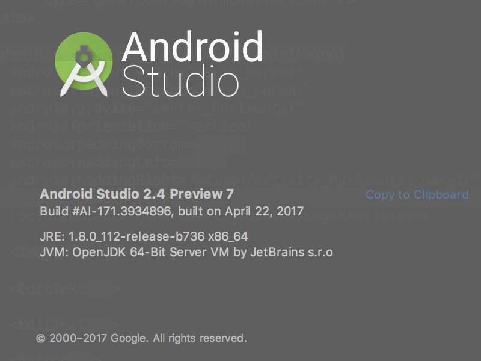
gradle 版本
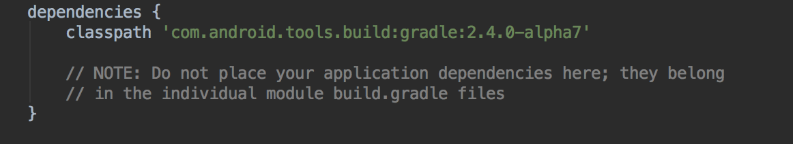
开启data bing 模块，修改对应的build.gradle文件，在android{}下添加以下代码:
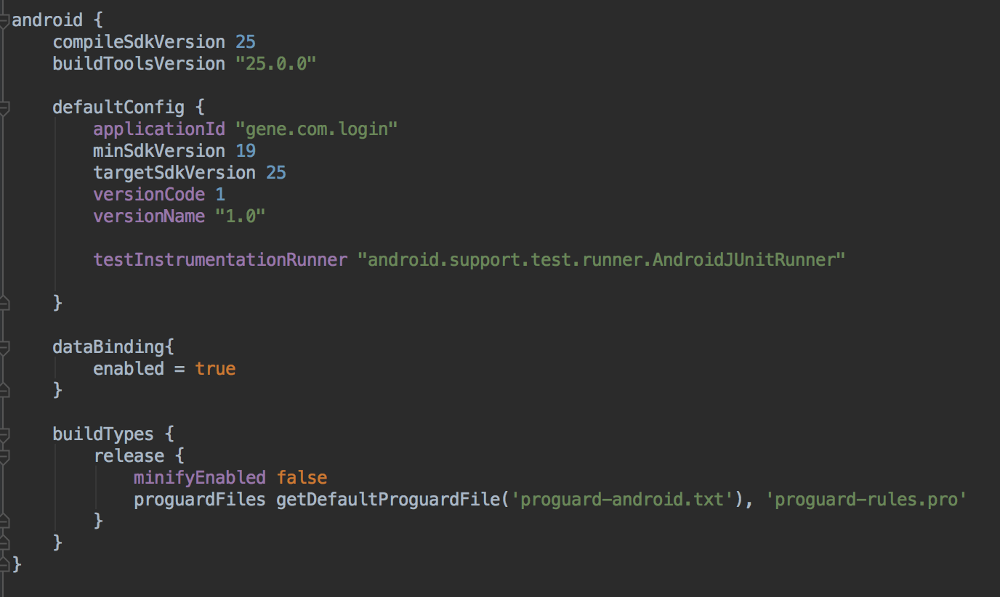
开始
声明节点
使用data bing之前我们的布局文件是这样的，它的根节点是一个viewgroup。
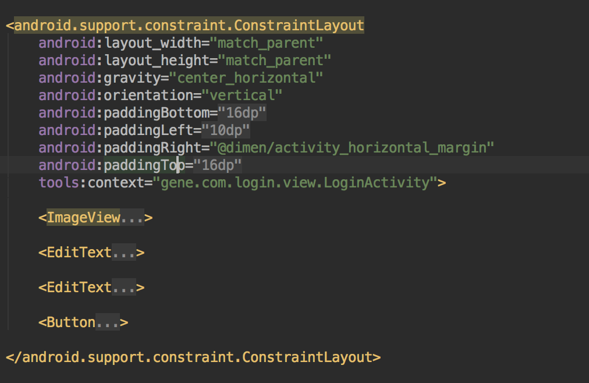
使用之后变成这样
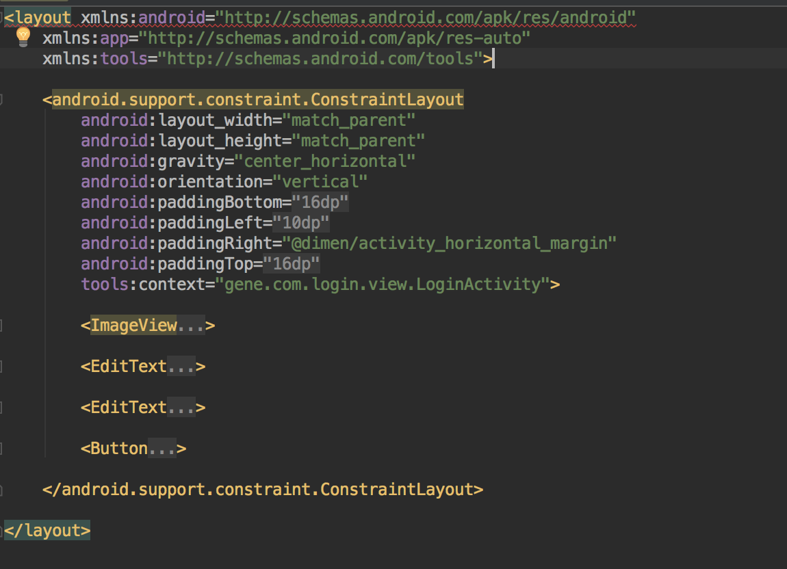
布局文件的根节点变成了layout，而且多一个data的节点，在data中声明一个variable标签，这个变量就是我们java代码实现与xml布局文件绑定的基础，格式如下：
<variable name="变量名称" type="完整类名称" />
定义对象实体
添加一个java bean account类，主要保存用户登录输入的信息，
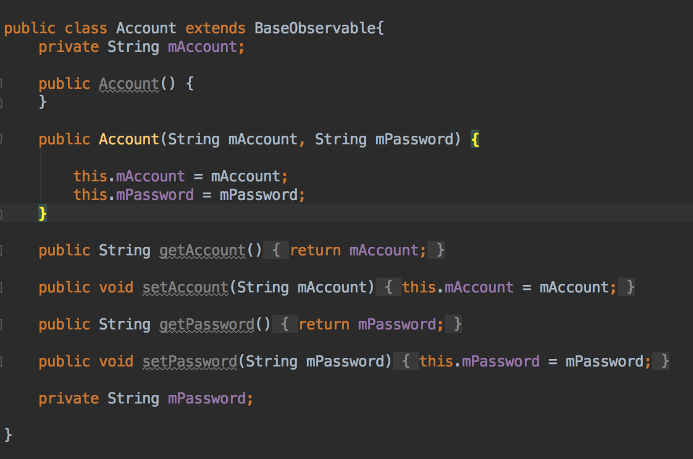
随后将我们的布局文件更改为：
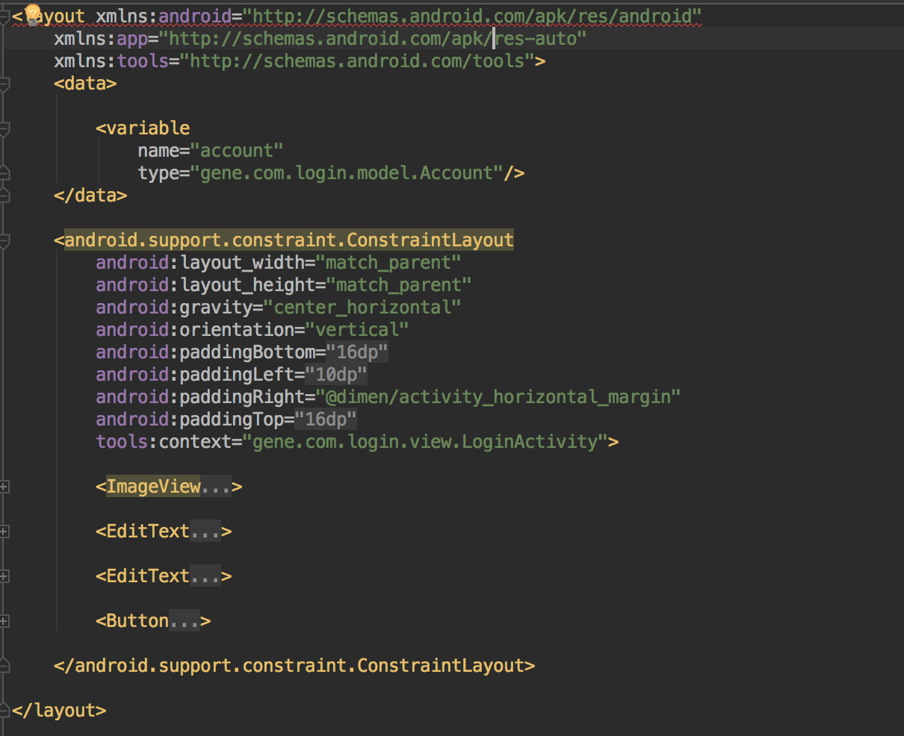
除了这样引入我们的bean对象外，我们还可以像java类导入一样导入我们所需要的实体，
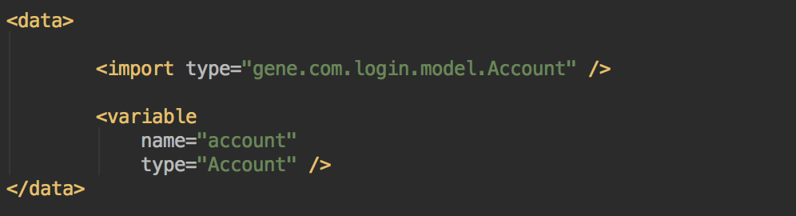
另外，在导入包的同时我们还可以对其设置别名，这样可以避免有两个名称一样的实体对象时，引入出现问题，
注意
java.lang.*包下的类会自动被导入，所以我们使用的使用不需要指明完整的类名称，可以直接使用。
data下面的variable变量，可以有多个。
数据绑定
回到我们loginactivity类，修改我们原有的oncreate方法，用DatabindingUtil.setContentView()来替换掉 setContentView()，创建一个 account 对象，通过binding.setUser(account) 实现绑定。
数据使用
xml布局文件使用变量的方式：
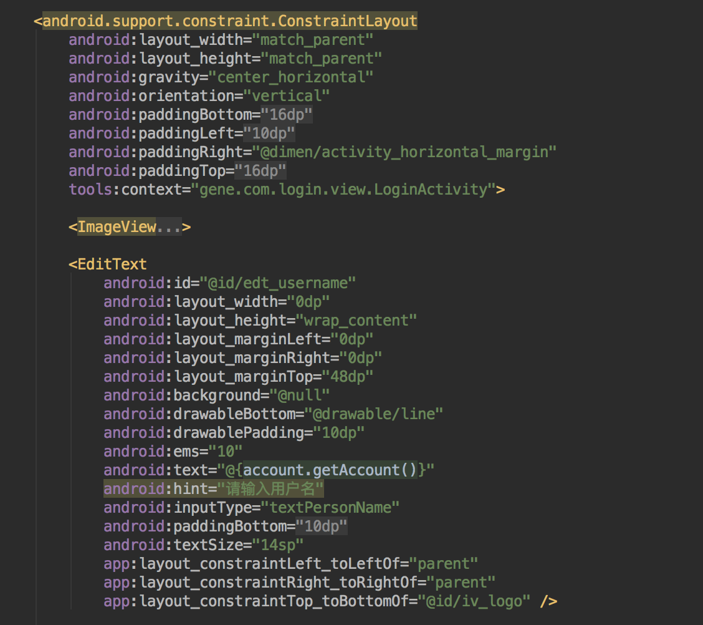
xml 的 UI 元素就可以直接使用我们在activity创建的account对象
其他
使用类中的静态方法
添加一个简单的把名字转为大写的方法

在xml布局文件中使用
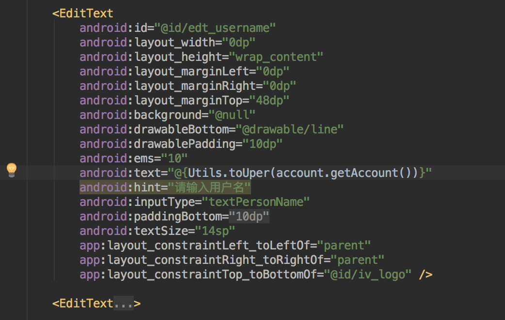
Null Coalescing 运算符
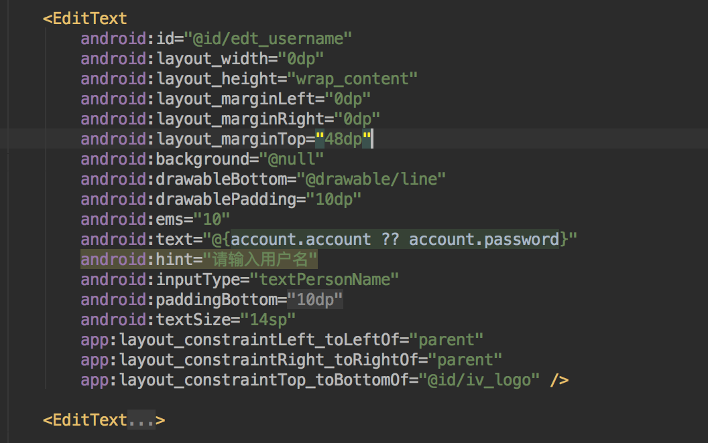
等价于：
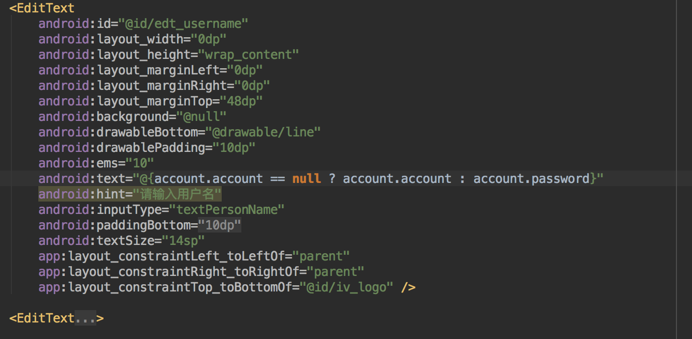